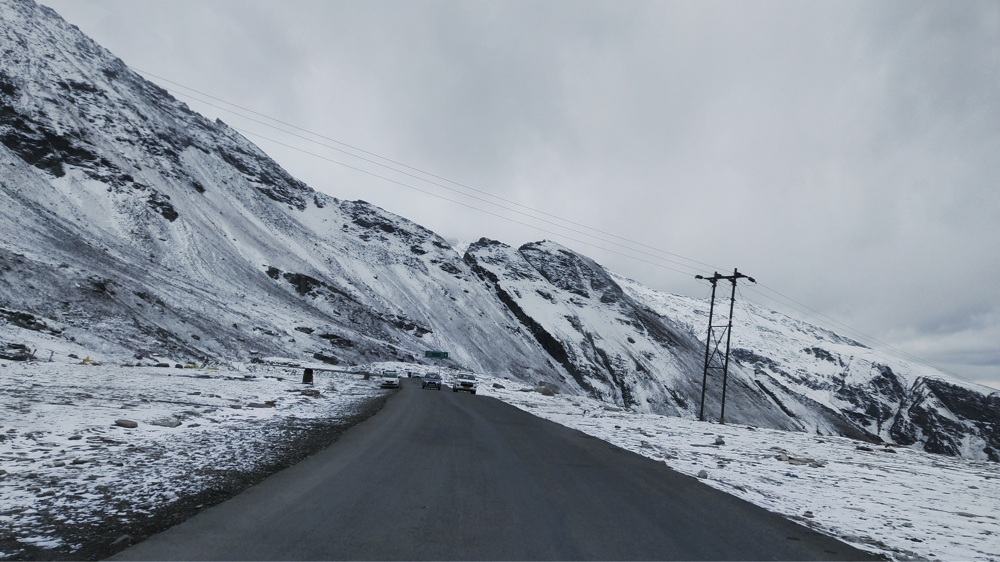
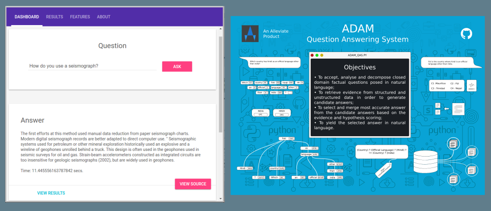
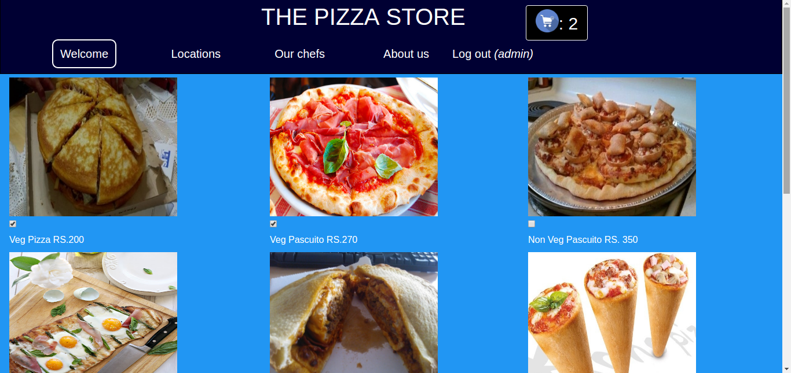

Selected Projects
Selected projects.
A few projects across AI, NLP, and full-stack development.
Featured AI Work
ADAM Question Answering System
Question answering system built around NLP.
View Repository
Full-Stack Build
Online Food Ordering System
Web application for ordering and delivery workflows.
View Repository